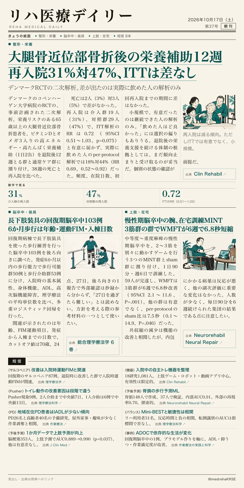
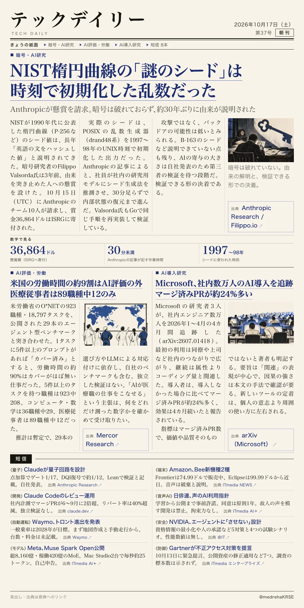

リハ医療デイリー
大腿骨近位部骨折後の栄養補助12週 再入院31%対47%、ITTは差なし
デンマークRCTの二次解析。差が出たのは実際に飲めた人の解析のみ
栄養リスクのある65歳以上の大腿骨近位部骨折患者に、退院後12週の栄養補助を行い、38週の死亡と再入院を見た。

テックデイリー
NIST楕円曲線の「謎のシード」は時刻で初期化した乱数だった
Anthropicが懸賞を請求。暗号は破れておらず、約30年ぶりに由来が説明された
1990年代に公表されたNISTの楕円曲線のシード値の由来を、AnthropicのチームがAIの助けも借りて特定し、3年前の懸賞を請求した。
